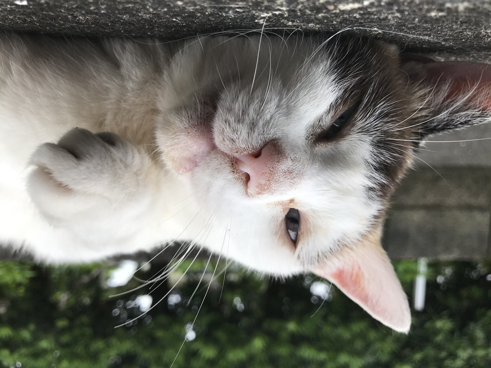
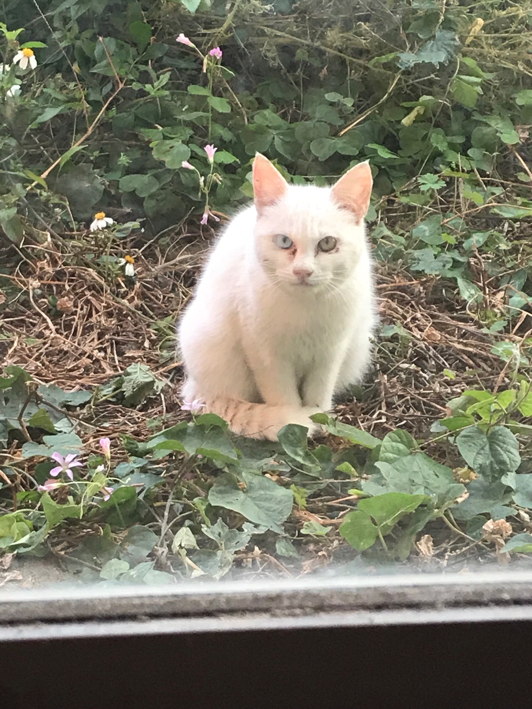

2020.11.16
こんにちは。金ふぐです。
突然ですが、みなさんはペットを飼っていますか？ 体全体に毛が生えている子は大体可愛く思えますが、猫はダントツですよね（あくまで個人の意見です）。
今回は、私が今まで撮りためてきた猫たちの写真を載せていきます。どの写真も渾身の作品です。ぜひご覧ください！
母には、「ちょっとブサイクじゃない？ ブログに載せるのは止めたほうがいいよ...」と不評だった写真。でも私は可愛いと思う...。
特にこの左前足がイイ！...。
そして次の写真も同じ子。
実はこの子、うちの子なんです。段ボールに捨てられていたのを拾ってから13年経ちました。このまま長生きして欲しい．．．。
最後の写真は、ちょっと珍しいオッドアイの子。
よく見ると、右が青で左が黄色なのが分かります。この子の妹もオッドアイでした。遺伝ってすごいですね。
今回はここまでです。楽しんでもらえたでしょうか？ 今後も撮りためた写真や新しい写真を随時公開していくつもりです。よろしければまた見てくださいね！
管理人プロフィール
魚か馬かで学説が分かれている20代の人間。写真やDIYを中心にブログを更新していきます。
検索（使えません）